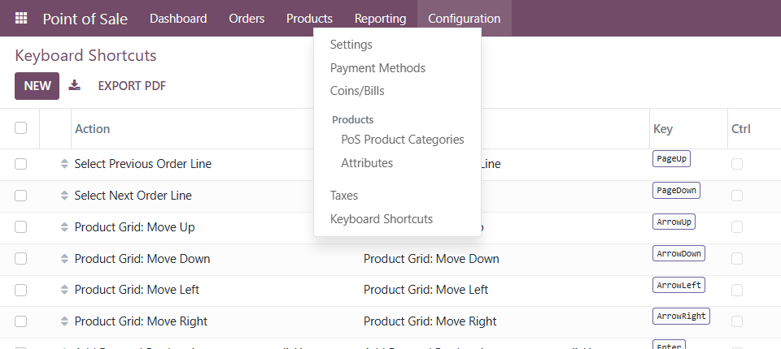
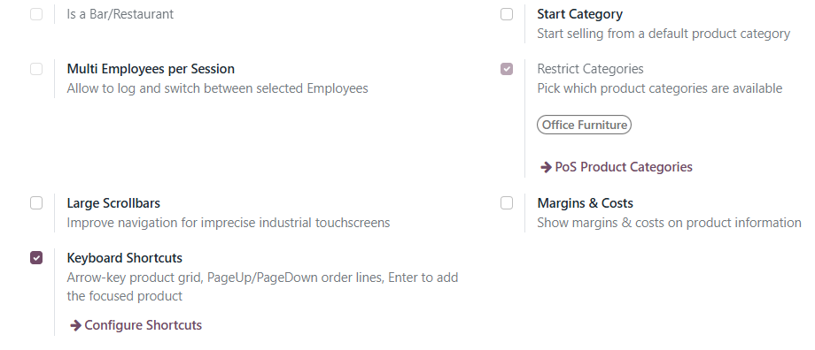
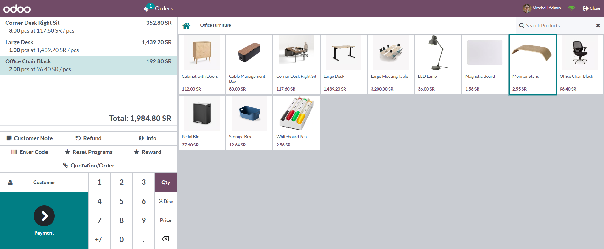
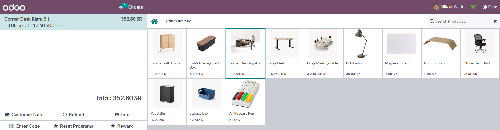
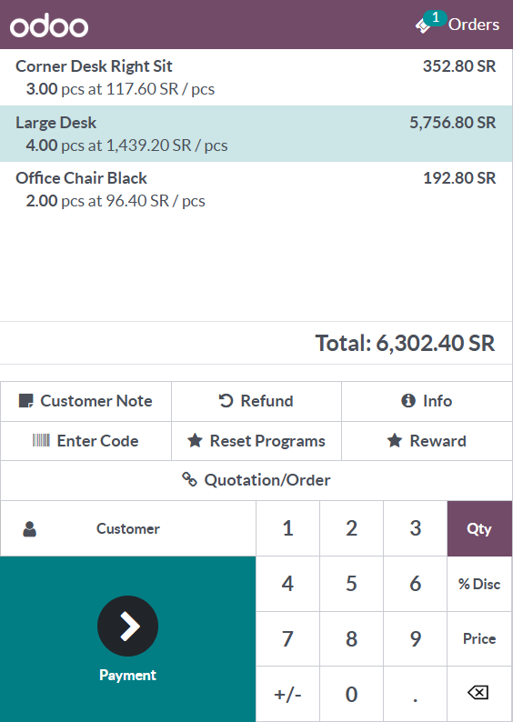
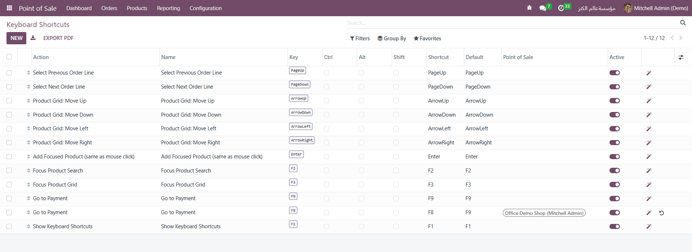
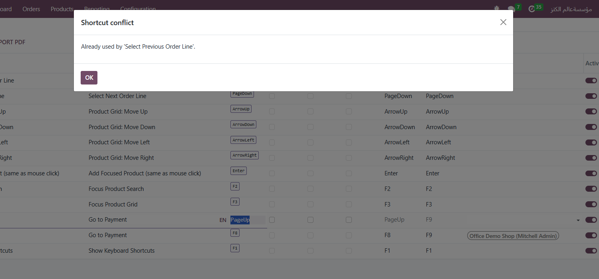
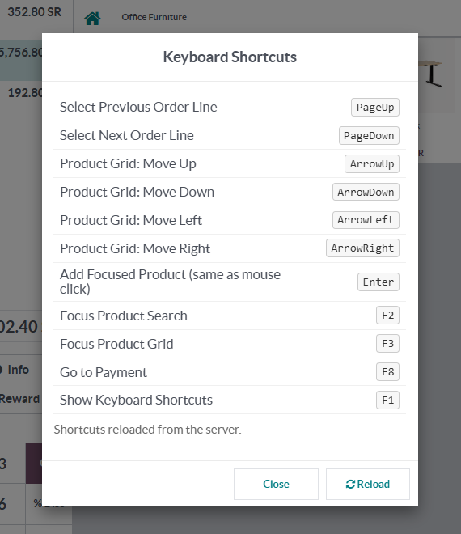

Run the whole product screen from the keyboard: arrow keys move across the product grid, Enter adds the focused product exactly like a mouse click, and PageUp / PageDown walk through the order lines. Every key can be changed from the backend, and barcode scanners keep working.
Fast cashiers keep their hands on the keyboard. The standard product screen is built for touch and mouse.
Install, open a session, type.
Screenshots come from a demo shop, Office Demo Shop, with 12 office furniture products, the default key map and one shop-specific override (Go to Payment on F8).
Point of Sale › Configuration › Keyboard Shortcuts (POS Administrators) lists every mapping. Each shop also gets a Keyboard Shortcuts switch in Point of Sale › Configuration › Settings, with a Configure Shortcuts link.


The first arrow press focuses the first product card. ← → move one card in reading order, ↑ ↓ move one row and stay in the same column. The cursor stops at the edges, jumps to the last card when the row below is shorter, and follows the screen direction in Arabic (right-to-left). The focused card gets a clear ring; after you click elsewhere a faint marker shows where the arrows will continue.

On a focused card, Enter runs the same handler as a mouse click: the first press adds 1 unit, each further press adds one more. Variant configurator, lot/serial prompt, scale and any module that extends the click (for example packaging modules) behave as usual. Ten fast presses give exactly ten units; holding the key down does not keep adding.

PageUp selects the previous order line and PageDown the next one, scrolls it into view and clears the numpad buffer, so the next digits you type set that line’s quantity. Selection stops at the first and last line.

In the list, click the Key cell and press the key: the key and the Ctrl, Alt and Shift boxes are filled for you, and the Shortcut column shows the result (for example Ctrl+Alt+S). The magic-wand button (Suggest Free Key) picks the first safe, unused combination, the undo button (Restore Default) brings back the factory key, and Reset All to Defaults resets the whole map. Leave Point of Sale empty for every shop, or pick shops to override the global key of that action there.


F1 opens Keyboard Shortcuts inside the POS with every active action and its keys. Reload fetches the latest map from the server, so a change made in the backend applies without closing the session. Offline, the current keys are kept.

Created at installation; every row can be changed or archived.
| Key | Action |
|---|---|
| ← ↑ → ↓ | Product Grid: Move Left / Up / Right / Down |
| Enter | Add Focused Product (same as mouse click) |
| PageUp / PageDown | Select Previous / Next Order Line |
| F2 | Focus Product Search |
| F3 | Focus Product Grid (returns to the last card) |
| F9 | Go to Payment (same checks as the Payment button) |
| F1 | Show Keyboard Shortcuts |
The situations that break naive keyboard add-ons on a busy till.
Uses the standard Point of Sale groups.
| Who | Sees / can do |
|---|---|
| Point of Sale / User | Uses the shortcuts in the POS and reads the key map (needed to load and reload it). Cannot change it. |
| Point of Sale / Administrator | Sees the Keyboard Shortcuts menu; creates, edits, archives and deletes shortcuts; toggles the feature per shop in Settings. |
| Multi-shop | Each session only receives the global shortcuts plus those bound to its own Point of Sale. |
| Odoo version | 16.0, Community and Enterprise |
| Depends on | point_of_sale |
| Python dependency | None |
| Languages | English, Arabic (i18n/ar.po, used for Arabic / ar_001), right-to-left aware grid navigation |
| Menus | Point of Sale › Configuration › Keyboard Shortcuts |
| Settings | Point of Sale › Configuration › Settings › Keyboard Shortcuts (per Point of Sale) |
| Models | pos.keyboard.shortcut (new); pos.config, pos.session, res.config.settings (extended) |
| POS extensions | ProductScreen and PosGlobalState extended through the POS registries; one new popup. No core template overridden. |
| Automated tests | 25: 10 Python tests (key rules, conflicts and shop scopes, suggestions, defaults, POS loading), 1 browser tour (grid moves checked against real card positions, 20-key bursts, F2/F3, Enter adding 1 then +1, 10 fast Enters, PageUp/PageDown), 14 QUnit tests (grid maths over every layout up to 25 cards × 8 columns, scanner guard, press queue, no listener leaks across re-renders) |
| License | LGPL-3 |
Questions, a demo, or an adaptation to your own process? Get in touch.
✉ ibrahim.yahiah@gmail.com LinkedIn: Ibrahim YahiaAuthor: Ibrahim Yahia · License: LGPL-3